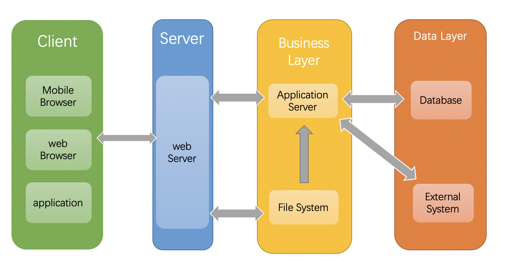

# NodeJS基础API2
- 热部署: 即使部署代码, 用户也是可以正常访问的。
- pv: 网站一天当中，有多少用户访问。
- uv: 独立访问量。
# Node.js Web 模块
什么是 Web 服务器?
- Web服务器一般指
网站服务器, 是指驻留于因特网上某种类型计算机的程序, Web服务器的基本功能就是提供Web信息浏览服务。 - 只需支持
HTTP协议、HTML文档格式及URL，与客户端的网络浏览器配合。 - 大多数
web 服务器都支持服务端的脚本语言（php、python、ruby）等, 并通过脚本语言从数据库获取数据，将结果返回给客户端浏览器。 - 目前最
主流的三个Web服务器是Apache、Nginx、IIS。
- Web服务器一般指
Web 应用架构 
Client - 客户端: 一般指浏览器，浏览器可以通过 HTTP 协议向服务器请求数据。Server - 服务端: 一般指 Web 服务器，可以接收客户端请求，并向客户端发送响应数据。Business - 业务层: 通过 Web 服务器处理应用程序，如与数据库交互，逻辑运算，调用外部程序等。Data - 数据层: 一般由数据库组成。
- node 的角色

# Node.js Express 框架
- 把 node 基本的 API, 合成起来的开发框架
# fs 模块(文件模块)
同步(sync后缀): 阻塞代码, 导致性能差异步(不具有后缀, 有回调): 不阻塞代码, 回调嵌套很多。解决 promise async/await.(推荐)
- 系统文件的常识
权限位: mode权限 描述1 描述2 描述3 备注 权限分配 文件所有者(自己) 文件所属组(家人) 其他用户(陌生人) 权限项 读 写 执行 字符 r w x 数字 4 2 1 八进制 位数 8-6位(文件所有者权限) 5-3位(文件所属组权限) 2-0位(其他用户权限) 一共10位 - 第九位
d目录文件p管道文件l链接文件(软链)-普通文件ssocket文件
- window 默认可读可写不可执行
- 第九位
标识位: flg- 表示对文件的操作方式
r: 读取r+: 读写rs: 读写, 绕开本地系统读取缓存。可以设置规则w: 写w+: 可读可写a: append. 只能追加写入a+: 读取和追加写入ax:wx+:rs:- 快速记忆:
r 读取, w 写入, s 同步, + 增加相反操作, x 排他方式
文件描述符: fd语言 描述1 描述2 描述3 描述4 nodejs 分配描述符 id 3 process.stdin(0) stdout(1) stderr(2)
- 文件基本操作
- 读写
const fs = require('fs'); // 同步读取 两个参数 const buf = fs.readFileSync('data.txt', {encoding: 'utf8'}); // 异步读取 const data = fs.readFile('data.txt', {encoding: 'utf8'}, function(err, data){ console.log(data); }); // 多次将内容，读取到缓存中。适合大文件和未知文件的大小 read() buffer // 创建一块内存大小 const buf = Buffer.alloc(6); // byte fs.open('data.txt', 'r', (err, fd)=>{ // 一个汉字3个字节 // 0 读取初始位置, 3 读取长度, 0 写入初始位置 fs.read(fd, buf, 0, 3, 0, (err,bytsRead, buffer)=>{ console.log('实际读取长度', bytsRead); console.log('实际读取内容',buffer.toString()); }); }) - 写入
const fs = require('fs'); // 同步写入, 会覆盖之前文件中的内容 const buf = fs.writeFileSync('data.txt', '写入的内容'); // 异步写入, 会覆盖之前文件中的内容 const data = fs.writeFile('data.txt', '写入的内容', {encoding: 'utf8'}, err => {}); // 追加写入 fs.appendFileSync('data.txt', '追加的内容') fs.appendFile('data.txt', '追加的内容', err => {}); // copy 写入 fs.copyFileSync('data.txt', 'dataCopy.txt'); fs.copyFile('data.txt', 'dataCopy.txt', err => {}); // 模拟同步拷贝文件 function copy(file, targer){ const data = fs.readFileSync(file); fs.writeFileSync(targer, data); } copy('data.txt', 'dataCopy.txt'); // 将 buffer 内容, 写入文件.分段写入 write() 6个参数 // 存入 buffer const buf = Buffer.from('一灯'); // byte fs.open('data.txt', 'r+', (err, fd)=>{ // 一个汉字3个字节 // 0 读取初始位置, 6 读取长度, 3 写入初始位置 fs.write(fd, buf, 0, 6, 3, (err, bytsRead, buffer)=>{ fs.close(fd, err => { console.log('关闭文件'); }) }); }) - 打开
// 异步打开文件 fs.open('data.txt', 'r', (err, fd)=>{ // 文件描述符 递增的非负整数 console.log('打印文件描述符', fd); // 24 fs.open('data.txt', 'r', (err, fd)=>{ console.log('打印文件描述符', fd); // 25 }) }) - 关闭
// 异步关闭文件 fs.open('data.txt', 'r', (err, fd)=>{ fs.close('data.txt', 'r', (err, fd)=>{ console.log('关闭成功'); }) })
- 读写
- 文件目录基本操作
- 查看权限
// 同步查看 try { fs.accessSync('dir/a') console.log('可读可写'); } catch(e) { // 路径错误, 或者没有权限就抛出错误 console.log('不可访问'); } // 异步，不需要 try - catch。因为有异步回调 fs.access('dir/a', err => { if(err){ console.log('不可访问'); } else { console.log('可访问'); } }) // 获取文件目录信息 // 同步获取 let file = fs.statSync('a/data2.txt') // 异步读取 let file = fs.statSync('a/data2.txt', (err, data) => { console.log(data.size); }) - 创建
// 同步创建 try{ // 确保传入目录都存在, 才可以正常创建目录 fs.mkdirSync("b/c"); }catch(e){} // 异步创建 fs.mkdirSync("b/c", err => {}); - 读取
// 读取目录下, 含有哪些的文件 fs.readdir("a"); - 删除
// 同步删除文件夹 fs.rmdirSync("a/c"); // 异步删除文件夹 fs.rmdir("a/c", err => {}); // 删除文件 fs.unlinkSync("file.txt"); // 异步删除文件 fs.unlinkSync("file.txt", err => {});
- 查看权限
- 读取文件夹下, 全部文件路径
const fs = require("fs"); const path = require("path"); function getFile(){ return new Promise((resolve, reject) => { const filePath = path.resolve(__dirname, "./doc"); fs.readdir(filePath, (err, files) => { const fileArr = []; files.forEach(fileName => { fileArr.push('/doc/'+fileName); }); resolve(fileArr); }) }) } async function getFilePath() { const result = await getFile(); return result; } function insertDbDData() { getFilePath().then(res => { // 存入数据库的操作 console.log(res) }) } insertDbDData();
← NodeJS基础API stream模块 →